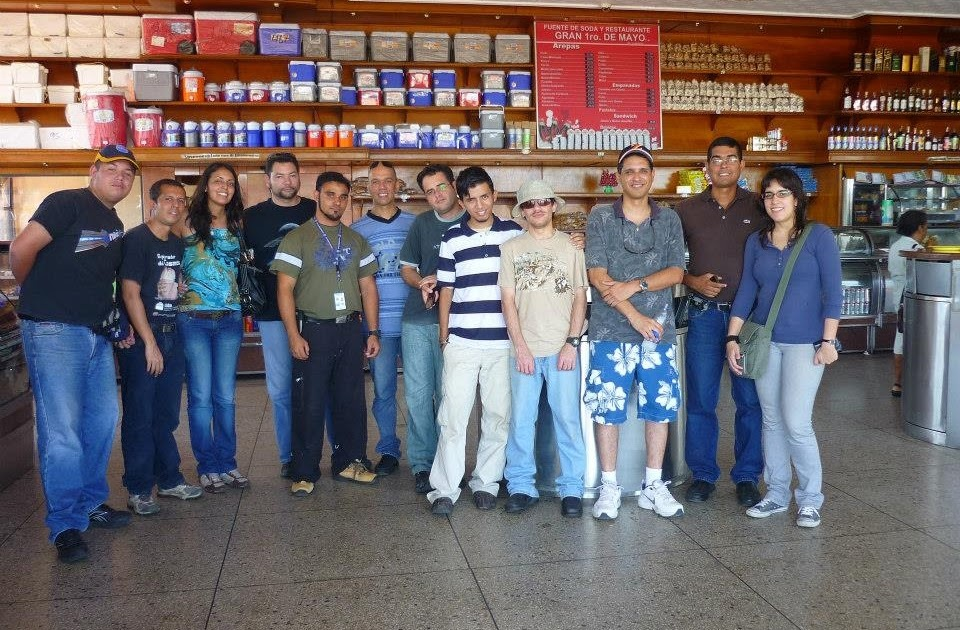

Nuestra Historia
En Noviembre de 2004, en el entonces remodelado Planetario Simón Bolívar de la ciudad de Maracaibo, se inició un curso de orientación de estrellas como parte de las actividades programadas con miras a su reapertura. Durante el mismo, hubo la iniciativa fomentada por quienes dirigían el planetario para la creación de una agrupación que colaborara con las actividades llevadas a cabo por el parque, así como también para que velara por el cuidado de sus instalaciones. Esta agrupación fue denominada inicialmente “Sociedad de Amigos del Planetario”. A pesar del entusiasmo inicial, dicha agrupación no llegaría a trascender, principalmente por la apatía de quienes en un primer momento fomentaron su creación así como también del poco compromiso mostrado por la mayoría de quienes se apuntaron para ser sus miembros. Es por lo anterior que para finales del mes de abril de 2005, cinco de aquellos miembros de la extinta S.A.P. tomaron la decisión de crear una agrupación centrada en la astronomía aficionada y que entre sus objetivos estuviese también el llevar a cabo labores divulgativas de esta atractiva rama de la ciencia. Fue así como nació el Grupo Astronómico del Zulia (G.A.Z.) Tras reunir un mayor número de miembros y también cumplir con los requerimientos legales, el Grupo Astronómico del Zulia queda legal y formalmente registrado como agrupación civil, el 30 de enero de 2006. En todos los años de actividad, los miembros del G.A.Z. han sido capaces de efectuar variadas actividades divulgativas en sitios como el Planetario Simón Bolívar, la Biblioteca Pública del Estado Zulia, o la Vereda del Lago. Han podido documentar y atestiguar eventos astronómicos como los tránsitos de Mercurio de los años 2006 y 2016, el tránsito de Venus de 2012, los pases de varios cometas como lo fueron el Holmes, Lulin y Catalina entre otros, los eclipses totales de Luna de 2014 y 2015, los parciales de sol de noviembre de 2013 y agosto de 2017 y el eclipse total de Sol sobre Chile-Argentina de julio de 2019. En referencia a lo divulgativo, el G.A.Z. fue parte esencial en la coordinación de las actividades en el estado Zulia para lo que fue el Año Internacional de la Astronomía 2009, y en la organización del primer Encuentro Nacional de Astronomía organizado en la ciudad de Maracaibo, en Marzo de 2015. Recordando siempre que todas estas actividades no son únicamente para el disfrute de los miembros que lo constituyen, sino también para la colectividad en general que es invitada permanente a las mismas.
Viaje hacia la ciudad de Punto Fijo, estado Falcón, para la observación del Tránsito de Venus, el 5 de junio de 2012.
MISION
El Grupo Astronómico del Zulia tiene como misión fundamental la divulgación de la astronomía y demás ciencias del espacio a la colectividad en general. A su vez entre nuestra misión está el estrechar lazos con astrónomos profesionales y aficionados tanto de la región como foráneos, con el propósito de compartir y acrecentar cada vez más nuestra afición y el conocimiento de todo lo relacionado con las ciencias espaciales. Es además propósito de nuestro grupo el ser una voz clara y racional ante cualquier desinformación sobre eventos celestes y hechos del espacio que puedan presentarse ante la comunidad en general con explicaciones y/o desviaciones seudo científicas ofreciendo al público teorías ajenas a la astronomía o al raciocinio científico.
VISION
Constituirnos como un grupo de trayectoria y referencia obligada de la astronomía en la región Zuliana y en Venezuela, teniendo fuertes lazos de cooperación y apoyo con los demás grupos y sociedades astronómicas del país y del exterior.

Miembros del Grupo Astronómico del Zulia junto con los asistententes de diversas partes del país, durante el Encuentro Nacional de Astronomía de 2015 en Maracaibo, Venezuela

Escudo del Grupo Astronómico del Zulia